This module contains Bayesian filters.
All classes from this module are currently imported to top-level pybayes module, so instead of from pybayes.filters import KalmanFilter you can type from pybayes import KalmanFilter.
Abstract prototype of a bayesian filter.
Perform approximate or exact bayes rule.
| Parameters: |
|
|---|---|
| Returns: | always returns True (see posterior() to get aposteriori density) |
Return aposteriori probability density funcion (Pdf).
| Returns: | aposteriori density |
|---|---|
| Return type: |
Filter implementations may decide to return a reference to their work pdf - it is not safe to modify it in any way, doing so may leave the filter in undefined state.
Return the logarithm of evidence function (also known as marginal likehood) evaluated in point yt.
| Parameters: | yt (numpy.ndarray) – point which to evaluate the evidence in |
|---|---|
| Return type: | double |
This is typically computed after bayes() with the same observation:
>>> filter.bayes(yt)
>>> log_likehood = filter.evidence_log(yt)
Implementation of standard Kalman filter. cond in bayes() is interpreted as control (intervention) input 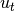 to the system.
Kalman filter forms optimal Bayesian solution for the following system:
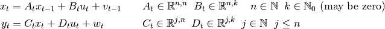
where 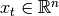 is hidden state vector, 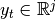 is observation vector and 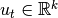 is control vector. 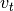 is normally distributed zero-mean process noise with covariance matrix 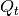, 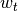 is normally distributed zero-mean observation noise with covariance matrix 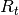. Additionally, every a posteriori pdf (and intial pdf) have to be Gaussian.
Initialise Kalman filter.
| Parameters: |
|
|---|
All matrices can be time-varying - you can modify or replace all above stated matrices providing that you don’t change their shape and all constraints still hold. On the other hand, you should not modify state_pdf unless you really know what you are doing.
>>> # initialise control-less Kalman filter:
>>> kf = pb.KalmanFilter(A=np.array([[1.]]), B=np.zeros((1,0)),
C=np.array([[1.]]), D=np.zeros((1,0)),
Q=np.array([[0.7]]), R=np.array([[0.3]]),
state_pdf=pb.GaussPdf(...))
Perform exact bayes rule.
| Parameters: |
|
|---|---|
| Returns: | always returns True (see posterior() to get aposteriori density) |
A filter whose aposteriori density takes the form
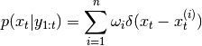
Marginalized particle filter implementation. Assume that state variable 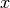 can be divided into two parts: 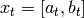, then aposteriori pdf can be denoted as:
TODO: better description of Marginalized Particle Filter class
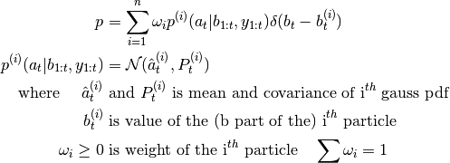
Perform Bayes rule for new measurement . Uses following algorithm: